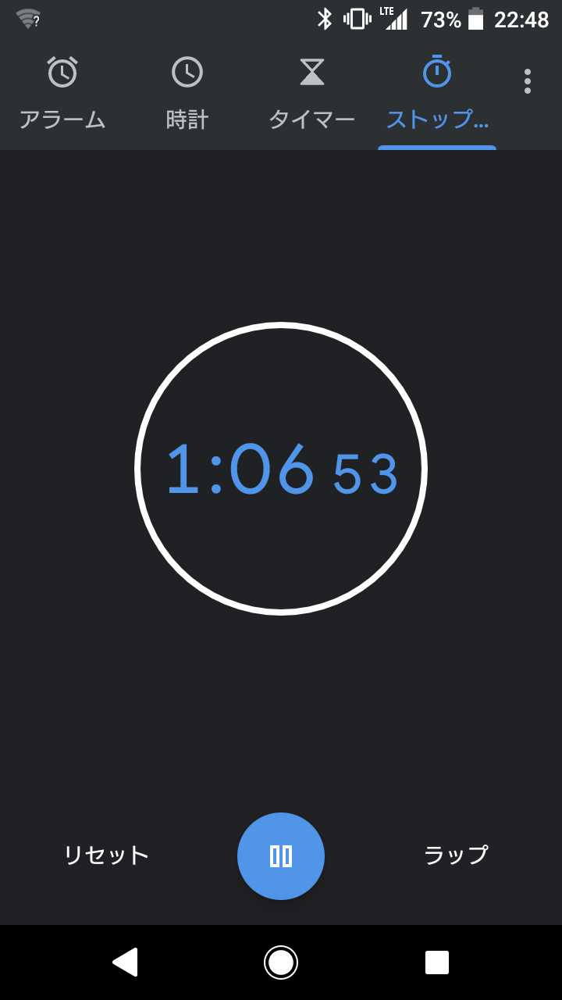

LTを5分で
終わらせる技術
そもそもLTを5分で終わらせる必要はある?
わからない
個人的には
プレゼンテーションは伝達のための技術で、
LTを5分に収めるのはその良い練習だと思う。
私がやっていること
- 練習
- 設計
- 調整
1. 練習
資料を作ったら最低でも1回は発表練習する
そうすれば発表にかかる時間がわかる
何回か練習すれば流暢に説明できるようになる
当日会場で資料作ってぶっつけで発表、
とか超上級者向け
2. 設計
5分間で説明できることは
思ったより少ない
5分間でわかりやすく説明できることは
思ったよりかなり少ない
なのでいきなりスライドを作り始める前に
下書きする

話の流れ
そのLTで最も伝えたいことは何か
ストーリーを設計しよう

すべてのスライドが意味を持つように
3. 調整
プレゼンテーションはインタラクティブ
聴衆に質問したり
デモしたり
反応が返ってきたり
たいてい練習通りには行かない
なので発表中に時計を見て調整しよう

まとめ
- 練習
- 設計
- 調整
俳句は五七五
LTは5分でなんか言う遊び